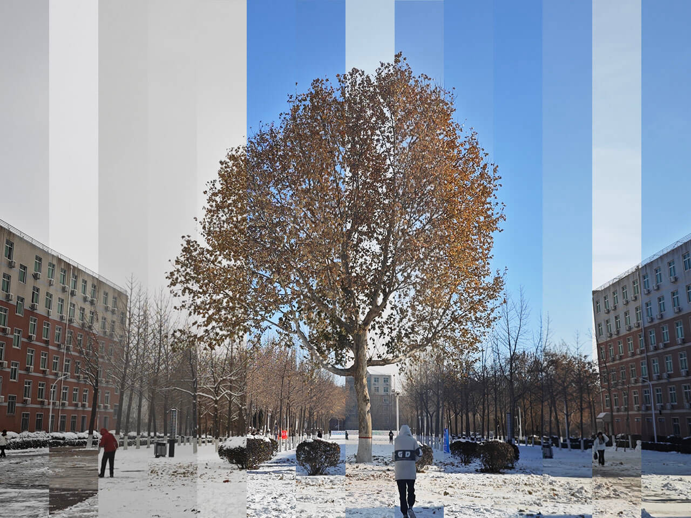
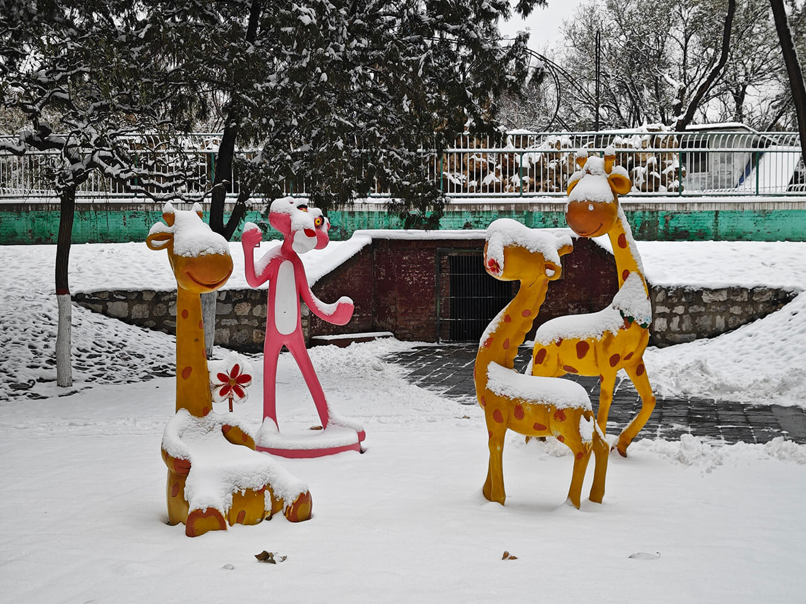
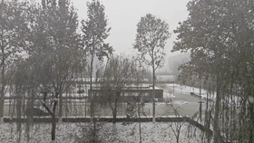
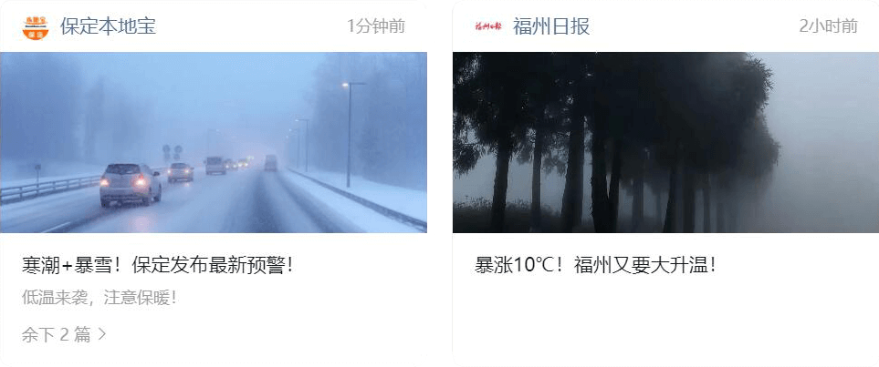
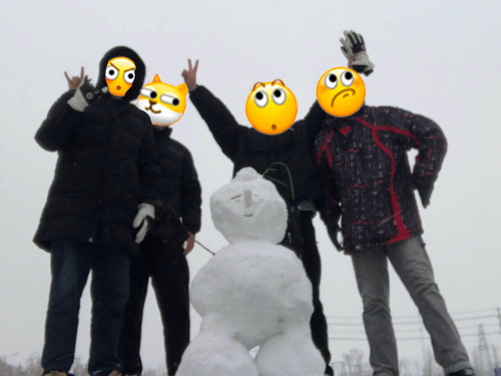
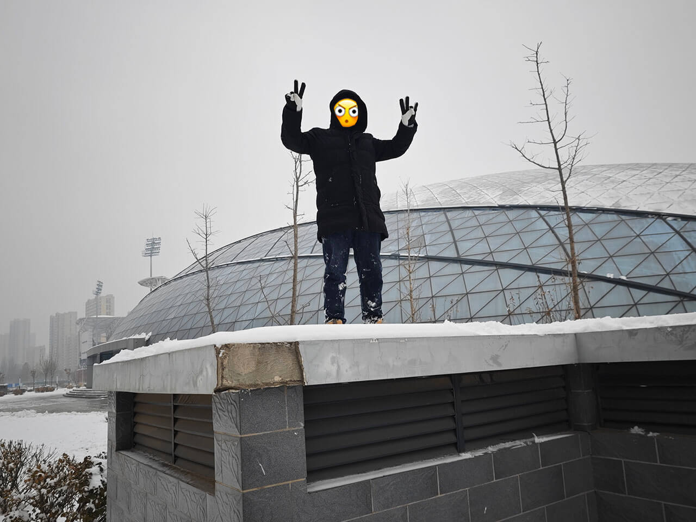
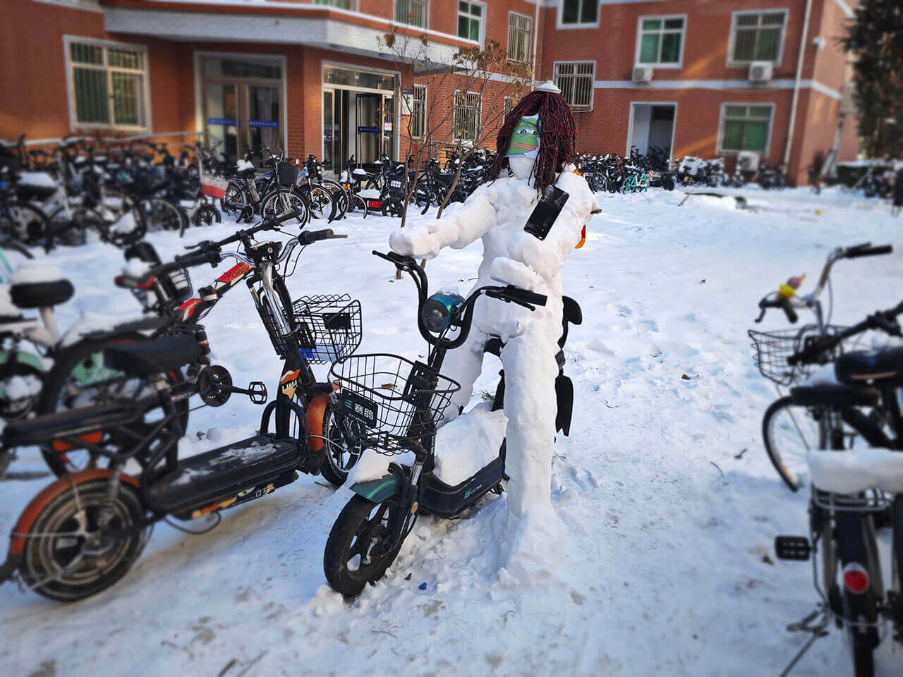

Diary-8-白茫茫

12.11、12.13、12.14 这三天下了大雪，据说还是人工降雪😇，因为河北的污染已经严重到自然是无法下雪的。
过了两周冀大才想起请来铲雪车铲雪，此时路面都已经结了厚厚的冰，真是孩子十八来奶了。
统计 PM 值似乎意义不大，因为当天的波动太大了，看天空的颜色判断空气的质量就行了。
这两周个人的 CV 能力前端技术得到了大幅提升！这一行业还真是深坑啊！
增加了积雪效果！
按下这个 Jelly button 按钮就可以显示 / 关闭下雪效果！
- 引入了 Apache ECharts 绘制温度曲线！
真是一个不爱科研老摸鱼的大水逼干的好事！
目录
12.11
这天是一个重要的日子！见到雪了，我发癫！

给没有见过世面的福建人看看什么叫下雪😎！
12.12
由于明天要下大雪，导师决定将组会提前到今日。本来组会都是轻松愉快的，结果这周要汇报的师弟油腔滑调🫣，导致导师非常生气😡！场面一度十分尴尬。
12.13
在实验室摸鱼的时候外面下起了大雪，跑出去看看。
出于网页加载速度的考虑，只能把录的视频压缩成很小的 gif 了。

下雪天真是太冷了，看了一会儿又回去了。
这才知道，下雪天是不用打伞的😯。

这就是差距吧。虽然在写博客的这天福州也很冷了。

下午跟舍友一起去堆雪人去了。根据网课上看的堆雪人教程，先用手搓一个雪球，然后在地上不断滚，越滚越大就行了。
四个人一人整了一个雪球，分别组成头部、身体和腿部，一个雪人就这么诞生了！

之后又打了一阵雪仗，玩得差不多了，这时间也快到晚饭时间了，不如直接去整个火锅吧🤪。
在冬天吃火锅还蛮舒服的。
本来觉得自己堆的雪人还可以，直到看到别人堆的才发觉自己堆得是真丑啊🫣。
12.14
又是一天大雪，我终于开始对雪有点厌烦了，主要是下雪天太难走路了。
12.15
雪停了。众所周知，雪融化是要吸热的，所以这段时间，保定气温迎来了急剧下降！不论穿得有多厚，根本不能在外面待太长时间，不然你会耳朵疼😈。
很遗憾，保定连扫雪的钱都掏不起，解决方法是等雪自然晾干😅。
充分利用好这那个三个月的时间，而且八张卡的算力其实是相对比较充裕了，课题组内其他的同学也可以一起用嘛，然后三个月之后的话。嗯，我会跟那个你导师去大概聊一下，因为中间也涉及到一个三个月之后，他的一个商务层面儿东西，可能涉及到一些水电费的一些问题，我们会简单收取一些水电费的一个费用。所以到时候也会跟你导师说一下这个事儿。
智算中心的算力到了，大抵是最后一批了，得抓紧时间继续这些算力炼一堆没有用的东西😇，真的蛮浪费的。
12.16
英语六级。非常不幸地把作文写偏题了，又得再来一次了😅。
12.17

打卡宿舍楼下的怪物。
打卡银杏大道前的菠萝屋。
12.18
又有一个小伙伴被裁了，大抵是要离开福州了🫣。
12.20
组会时间。研一的终于完成了他们的一次汇报周期，导师说下次组会要改变形式了。
导师说不要再发大水刊了，不！我的 Electronics😭。
离寒假剩下最后一个月的时间，这个学期也即将接近尾声……
12.21
配置好了智算中心的环境，继续开跑！
12.23
开始优化博客主题，之前很难实现的搜索功能终于在我和 ChatGPT 的不懈努力下实现了！